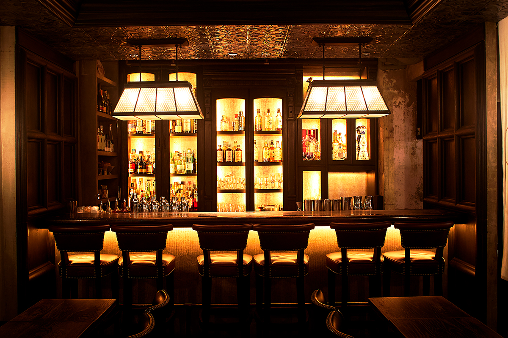
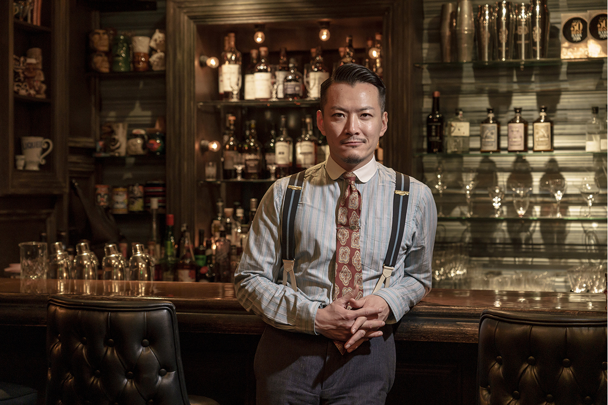
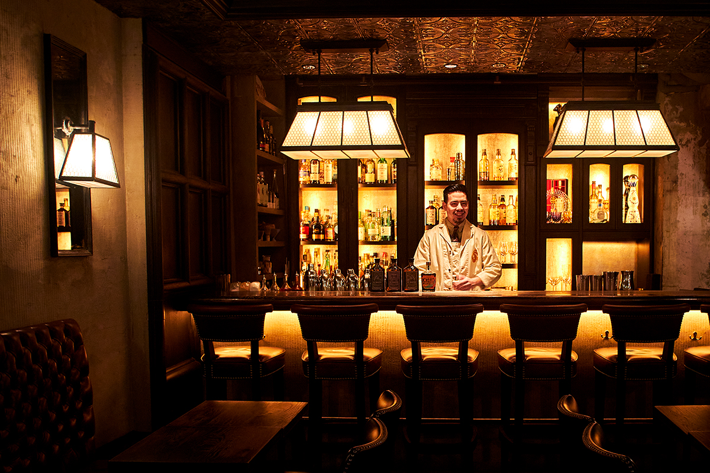
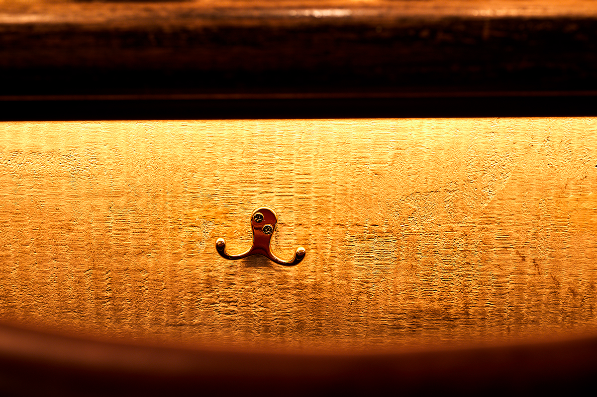
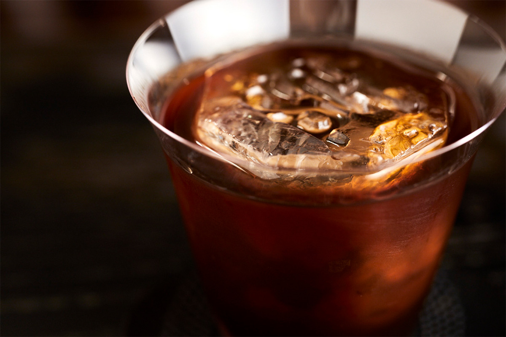
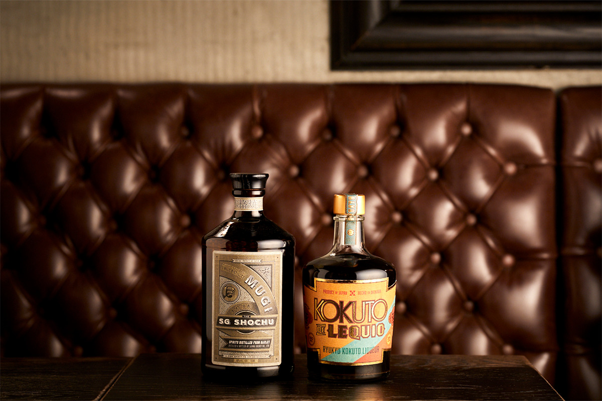
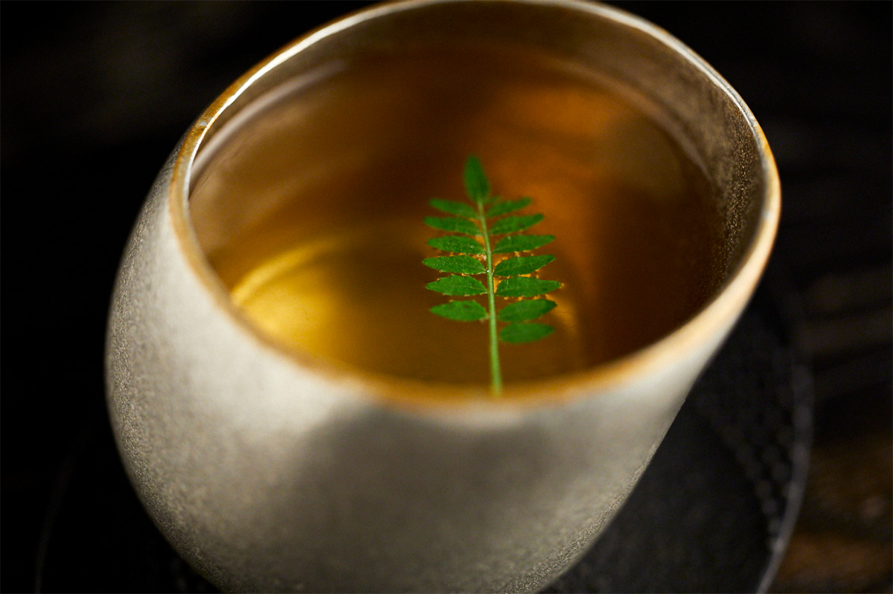
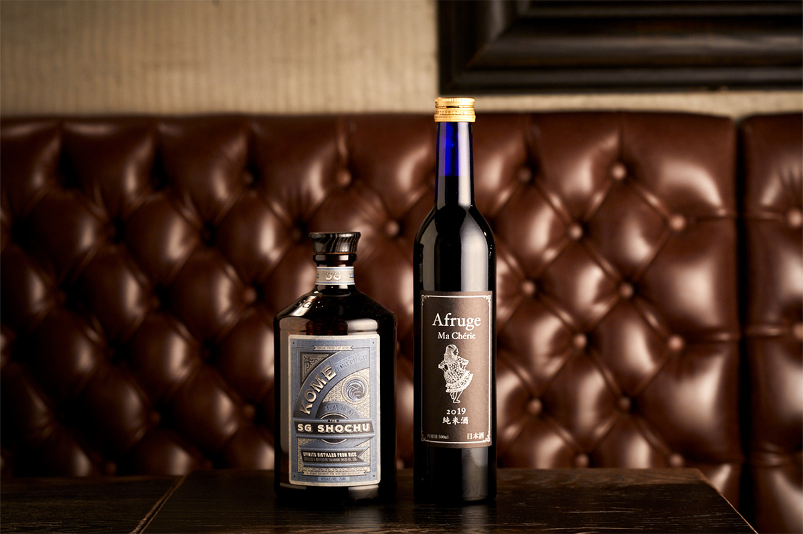
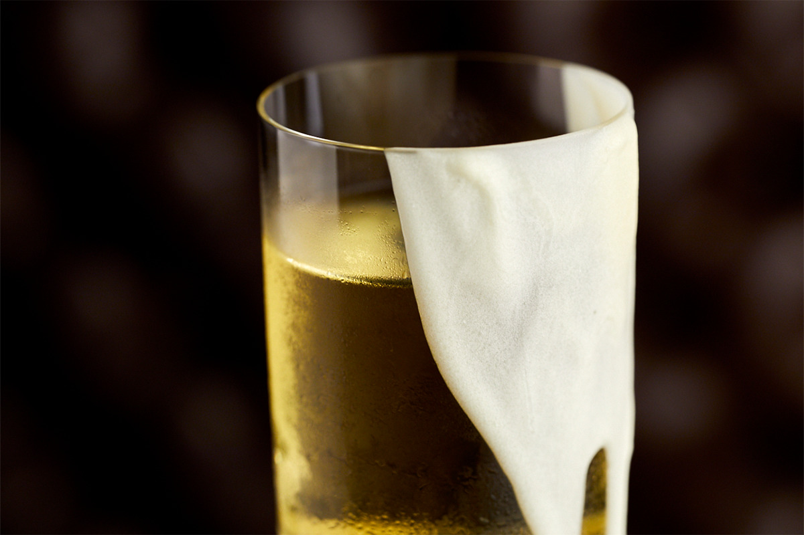
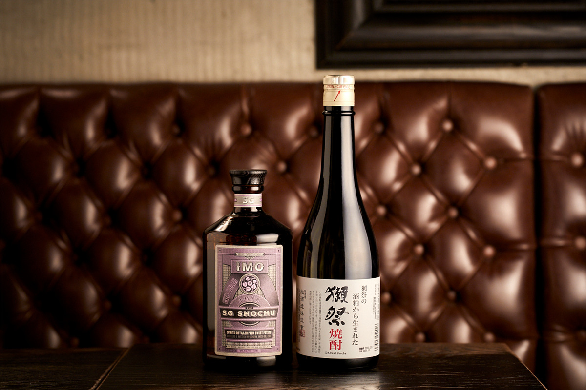

Токио · Сибуя · бар
The SG Club в Сибуе: бар, который мог бы открыть самурай, вернувшийся из Америки

Бар остаётся местом, где можно встретить незнакомый напиток и через разговор с барменом узнать его историю. Так о японских напитках и японской культуре рассказывают в The SG Club в Сибуе.
Концепция
Самурай, который увидел американский бар
The SG Club открыл в 2018 году Синго Гокан, один из самых известных барменов мира. Карьеру он начинал в Нью-Йорке, получил премию «Международный бармен года» на фестивале Tales of the Cocktail и множество других наград на международных конкурсах. Его компания SG Group к 2024 году держала три бара в Шанхае, а в Японии пять баров и магазин барного инвентаря.

Главная тема The SG Club это Япония. Концепцию придумали такую: бар, который открыл бы самурай эпохи Эдо, если бы съездил в Америку, познакомился там с барной культурой и вернулся домой. У каждого из трёх этажей своё настроение и своё меню. На первом этаже Guzzle, где коктейли пьют легко и без церемоний. В подвале Sip, зал для неспешных вечеров. На втором этаже Savor, сигарный бар только для членов клуба.
«Когда едешь за границу, хочется почувствовать культуру той страны. Поэтому в каждом коктейле, во вкусе, идее, ингредиентах и подаче, есть что-то японское. Так мы рассказываем о Японии гостям и из страны, и из-за рубежа»
Синго Гокан

Интерьер Sip собран из японских мотивов: татами, металлическая сетка с узором в виде черепашьего панциря, бумажные фонари андон, решётчатые двери. Всё это соединено с нью-йоркским стилем, и в зале спокойно и уютно. Есть даже кабинка чистильщика обуви: можно пить коктейль, пока тебе начищают ботинки.

Сётю
Почему бармен взялся за японский дистиллят
Коктейли SG Group известны выдумкой и чувством юмора. В 2024 году Синго Гокан больше всего интересовался сётю, японским крепким напитком.
«Сётю перегоняют меньше раз, чем многие дистилляты мира, и он сохраняет вкус сырья: по технологии это высший мировой уровень. Хочется, чтобы о японском мастерстве узнали»
Синго Гокан
Взглянув на сётю глазами бармена, SG Group вместе с винокурнями выпустила The SG Shochu в трёх вариантах: рисовый KOME, бататовый IMO и ячменный MUGI. Ещё один продукт компании, KOKUTO DE LEQUIO, создатели называют первым в мире ликёром на тёмном тростниковом сахаре: его делают из окинавского авамори и окинавского сахара.
«Через эти напитки и через взгляд нашей команды, которая ездит по всему миру, хочется показать японский алкоголь и культуру вокруг него»
Синго Гокан
Меню
Три коктейля на японских напитках
OKINAWAN FASHIONED
Вариация на классический Old Fashioned. Густая сладость ликёра KOKUTO DE LEQUIO и солодовый тон ячменного The SG Shochu MUGI рисуют в бокале Окинаву.


WHISKY NIGIRI
Коктейль устроен как суши нигири. Японский виски играет роль рыбы, а рис изображают рисовый The SG Shochu KOME, выдержанное сакэ, красный уксус и васаби. Делаешь глоток и с удивлением узнаёшь вкус настоящих суши.


LEES IN WAX
Идею подсказали традиционные японские свечи. Сакэ-касу, рисовую барду, и другие ингредиенты на основе бататового The SG Shochu IMO настаивают в растительном воске хадзэро. Пьют коктейль из бокала, покрытого белым шоколадом, и он напоминает сладкое пирожное.


The SG Club
- Адрес
- Токио, Сибуя, Дзиннан, 1-7-8
- Телефон
- +81 50-3138-2618
- Часы работы
- Guzzle 17:00–2:00, Sip 18:00–2:00 (оба в пятницу, субботу и накануне праздников до 3:00), Savor 19:00–3:00
- Выходные
- нерегулярные
- Цены / Вход
- сервисный сбор 10% (в Guzzle нет), коктейли от 1900 иен
- Сайт
- sg-management.jp
Фото: Кэндзи Окадзаки.